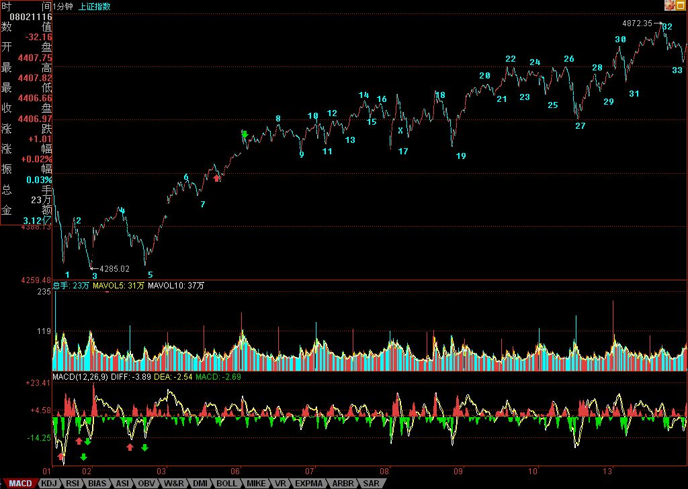

2007/8/13 15:38:41
上周末说了，热点会逐步蔓延，从50-300-二、三线，今天，300中已经骚动不断，而二、三线，也已经有不少按捺不住蠢蠢欲动了。今天唯一不完美的，就是第三类买点还没有走出来，所以，明天的走势依然有变数。最简单的，还是看5日线。
从4200上来的走势，从下图就可以看到，一种走势类型划分已经逐步明朗。1-14是一个1分钟的上涨走势，从14-27，是一个5分钟的中枢，27-32，是对该5分钟中枢的离开，该离开与回抽依然没有完成，就看明后两天的发展。如果能形成第三类买点，那么其后就看是否形成背驰性走势，否则，就要在14-27的区间形成30分钟的中枢了。
个股方面，没什么可说的，还是中字头。N天前，本ID骂中行和中石化连新高都不去太过分，今天，也都基本新高了，这可以看出，中字头就是有力量。当然，所谓的中字头，就是大型国企，只是本ID比较懒，就买其中带中字开头的，这样好记。当然不会有人觉得，如果没有中字头的就不会涨了。原来的那十几只老股里，依然是中字头的000777表现最好，后面，一旦热点蔓延成立，其他都会逐步动起来的。本ID买股票从来都不是乱买的，8元让各位买000777时，各位当然不可能知道该股基本面将会怎样，但本ID就知道，这就是对基本面的把控能力，光技术面，只是一方面。例如，600649，大概到现在，没人知道这股票里卖的什么药，但如果你去研究一下该股是现在管理层的资本运用的辉煌历史，还有上海市对国企重组的计划，那么，当然就明白，本ID当时让各位在6元买入，不是瞎说的。好的剧本，当然是慢慢展开的，本ID经常是在序幕时就告诉各位，所以，如果没耐心的，千万别买本ID说的股票。否则，请问，有谁能把000777从8元拿到现在？大概，除了本ID，来这里的人是不会有了。
（这里原有私人资料已删除，有缘得之，无缘亦不失，梦中游戏，能窥操作之一斑，不枉本ID之冒险一贴。）
下面是分段图，各位研究去吧，有一个谈判在4点，先下，再见。
